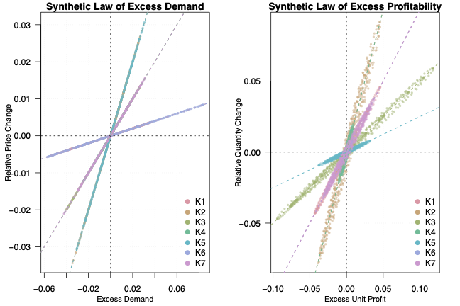
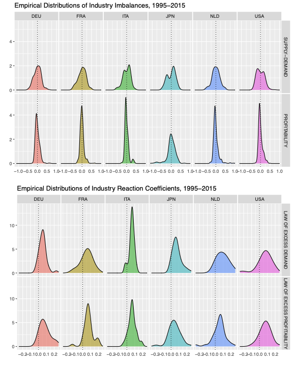
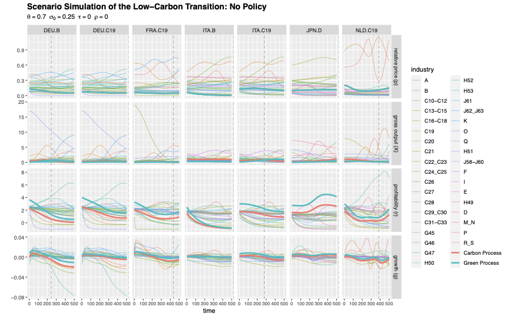
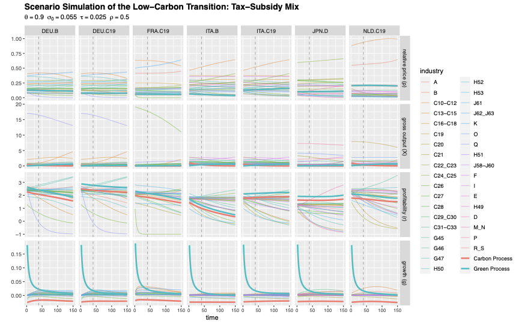
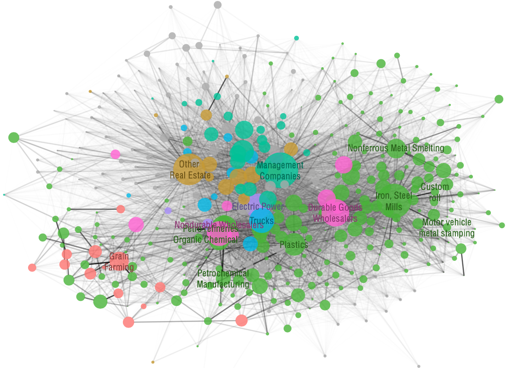
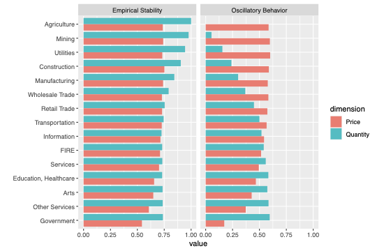
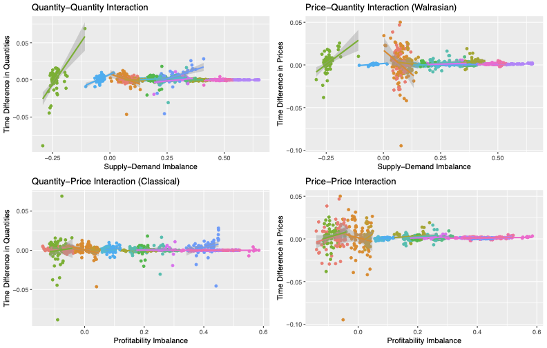
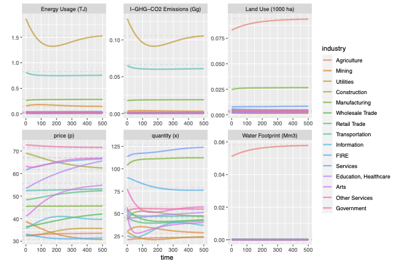

Research Programme
This research programme develops a family of multi-sector dynamical models rooted in the classical political-economy tradition — specifically the Flaschel–Semmler framework of cross-dual price-quantity adjustment — and calibrates them empirically against large international databases (EU KLEMS, WIOD, EORA). The unifying question is: how do sector-level fluctuations in prices, quantities, and environmental flows propagate through the input-output structure of production, and how can fiscal policy steer that propagation toward decarbonisation and macroeconomic stabilisation simultaneously?
Paper I — Journal of Economics and Statistics
Assessing the Speed of the Green Transition: Directed Technical Change in a Multi-Sector Growth Model
How fast can a modern economy decarbonise — and what does it take to hit the IPCC 1.5°C targets on time? This paper answers these questions using a multi-sector growth model in which a green sector and a carbon sector compete through cross-dual price-quantity dynamics. The adjustment coefficients are estimated empirically for six developed economies from EU KLEMS and WIOD data. Over 14,000 simulations varying tax rates, subsidy rates, cost efficiency, and initial investment ratios reveal a clear policy hierarchy: without fiscal policy, no economy reaches the IPCC target within any reasonable horizon. Carbon taxes on profits have the largest impact, green subsidies come second, and cost efficiency alone — even orders of magnitude above current levels — cannot compensate for the absence of public policy.
Carbon taxes on profits are the single most powerful lever for decarbonisation speed — more than twice as effective as green subsidies in the simulation ensemble.
Fiscal policy has its greatest effect at the earliest stages of the transition, supporting a "big push" logic: early public investment mobilises private capital into green sectors.
Cost efficiency (relative capital intensity of the green sector) has a negligible impact on speed within realistic time frames — challenging pure technology-optimist narratives.
A revenue-neutral tax-subsidy mix — taxing carbon output to subsidise green output — is the minimum necessary instrument to reach IPCC targets. No policy = no target.
Selected figures




Paper II — Journal of Economic Behavior & Organization
Stabilising Economy-Environment Interactions: A Multi-Sector Growth Model with Empirical Adjustment Dynamics
The COVID-19 pandemic and the Ukraine war exposed how poorly understood the propagation of macroeconomic shocks through input-output networks remains. This paper proposes a "composite" multi-sector growth model — integrating long-run Walrasian price dynamics, classical quantity adjustment, and short-run Keynesian markup pricing and demand-led investment — calibrated from the EORA global input-output database and EU KLEMS. The model functions like a machine-learning algorithm: adjustment coefficients are estimated via a mixed-effects hierarchical regression, then fed into forward simulations. The framework is then used to evaluate how taxes, subsidies, price caps, and profit caps can simultaneously stabilise macroeconomic fluctuations and reduce environmental pressures (carbon emissions, land use, water waste).
The composite model reproduces the empirical spectral properties of sector-level price and quantity fluctuations — validating the Flaschel cross-dual framework as a data-driven alternative to DSGE.
Price caps and profit caps outperform pure tax-subsidy instruments at stabilising economic volatility, but must be combined with green incentives to achieve environmental co-benefits.
Input-output network structure matters: hub sectors (energy, food, chemicals) amplify or dampen shocks non-linearly — standard representative-agent models miss this topology.
Sector-specific industrial policy targeting the most central nodes of the production network is more effective than uniform carbon pricing at achieving simultaneous stabilisation goals.
Selected figures




Shared Theoretical Architecture
Both papers draw on the same underlying framework — the Flaschel-Semmler cross-dual adjustment system — and use the same empirical strategy (mixed-effects varying-slopes on EU KLEMS). They differ in focus: the JES paper isolates the speed of structural change (the green transition as directed technical substitution); the JEBO paper studies simultaneous macroeconomic and ecological stabilisation under a richer set of policies and a global input-output network.